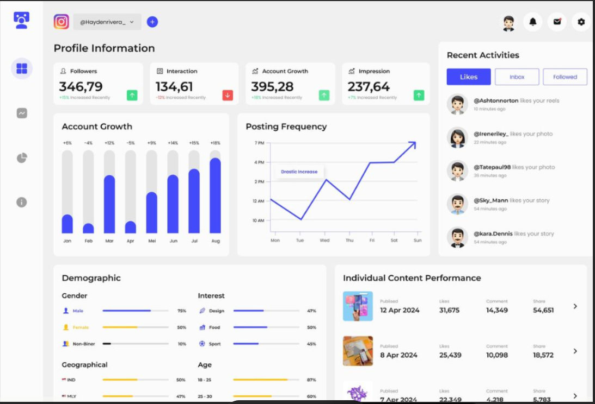

SEO • Lead Generation • Social Media • Growth Marketing
Choosing the right digital marketing agency can transform your business. In this comprehensive guide, you'll discover exactly how successful companies evaluate agencies, avoid costly mistakes and build long-term growth through search engine optimization, social media marketing, paid advertising and data-driven strategy.

Finding the best digital marketing agency is one of the most important investments a growing business can make. The right agency becomes more than a service provider—it becomes a strategic growth partner. Whether your goal is increasing organic traffic, improving brand awareness, generating qualified leads or scaling revenue, choosing an experienced agency can accelerate your results while avoiding costly mistakes.
Unfortunately, thousands of agencies promise first-page rankings, viral campaigns and instant growth. Very few consistently deliver measurable results. Understanding what separates a premium growth partner from an average marketing agency is essential before making your decision.
A digital marketing agency helps businesses grow online using a combination of search engine optimization (SEO), social media marketing, paid advertising, content marketing, website optimization, email marketing and conversion rate optimization. Rather than relying on guesswork, experienced agencies use analytics, user behaviour and performance data to build marketing systems that consistently generate traffic, leads and revenue.
Today's customers search Google before making almost every purchase. If your business doesn't appear when potential customers search for your services, you're losing valuable opportunities every single day. That's why investing in professional SEO and digital marketing has become essential rather than optional.

Search Engine Optimization remains one of the highest-return marketing investments because it attracts people already searching for your products or services. Unlike traditional advertising, SEO generates long-term traffic that continues working even after campaigns end.
Businesses that consistently publish high-quality content, optimize technical SEO, build authoritative backlinks and improve website performance are far more likely to dominate search results than competitors relying only on paid advertising.
Selecting the right agency requires more than comparing prices. The best digital marketing agencies focus on business outcomes instead of vanity metrics. Before signing any contract, evaluate their experience, portfolio, communication style, reporting process and ability to understand your business goals.
A premium agency should provide a customized strategy rather than a one-size-fits-all package. Every business has different customers, competitors and objectives, so the marketing approach should always be tailored accordingly.
Improve Google rankings through technical SEO, keyword optimization, content marketing and high-quality backlinks.
Create engaging content, grow communities and generate qualified leads across Instagram, Facebook and LinkedIn.
Maximize ROI with Google Ads, Meta Ads and conversion-focused PPC campaigns.
Build fast, mobile-friendly websites designed to convert visitors into paying customers.
Before hiring any agency, ask questions that reveal how they actually work.
SEO remains one of the most cost-effective digital marketing channels because it generates sustainable traffic over time. Unlike paid advertising, organic rankings continue bringing visitors long after the initial optimization work has been completed.
Successful SEO combines technical improvements, content creation, keyword research, internal linking, user experience optimization and high-quality backlinks. When these components work together, businesses experience consistent growth in traffic, authority and revenue.

At NEXRON, we don't believe in generic marketing packages. Every campaign begins with detailed research into your industry, competitors and target audience. We then develop a data-driven strategy focused on increasing qualified traffic, improving engagement and generating measurable business growth.
Many businesses hire agencies based solely on the lowest price. While affordability is important, choosing the cheapest option often leads to poor communication, outdated SEO techniques and disappointing results.
Instead, focus on expertise, transparency, measurable performance and the agency's ability to understand your long-term business goals. Investing in quality marketing usually produces significantly higher returns over time.
Digital marketing is evolving faster than ever. Artificial intelligence, predictive analytics, voice search, automation and personalized customer experiences are transforming how businesses attract and retain customers. Companies that invest in these technologies today will have a significant competitive advantage over the next decade.
At NEXRON, we combine human creativity with advanced technology to build marketing campaigns that deliver measurable business growth. Every campaign is continuously monitored and optimized to maximize return on investment.
? Research your industry and competitors
? Identify high-converting keywords
? Optimize website performance
? Create premium content
? Generate qualified leads
? Track performance and improve continuously
SEO is a long-term strategy. Most businesses begin seeing measurable improvements within three to six months depending on competition and website authority.
Both are powerful. SEO provides long-term organic growth while Google Ads generate immediate traffic. Combining both usually delivers the strongest results.
Yes. NEXRON specializes in helping startups, SaaS businesses and technology companies grow through data-driven digital marketing.
Absolutely. Every client receives transparent reports showing rankings, traffic, conversions, leads and campaign performance.
Choosing the best digital marketing agency is one of the most important decisions for any growing business. Look beyond pricing and focus on expertise, transparency, communication and measurable results.
A strong agency should become an extension of your team, helping you attract more customers, improve your online visibility and build sustainable long-term growth.
Increase rankings, traffic and qualified leads with proven search engine optimization strategies.
Build a loyal audience across Instagram, Facebook, LinkedIn and other leading platforms.
Premium websites designed to convert visitors into paying customers.
Partner with NEXRON and discover how strategic SEO, social media marketing and performance-driven campaigns can accelerate your business growth.
Explore more expert resources from NEXRON to improve your digital marketing strategy.
Learn technical SEO, on-page SEO, off-page SEO and keyword research strategies that improve Google rankings.
SEO ServicesDiscover how businesses grow using Instagram, Facebook, LinkedIn and content marketing.
Social MediaSpeak with the NEXRON team about growing your business through SEO and digital marketing.
Book Now